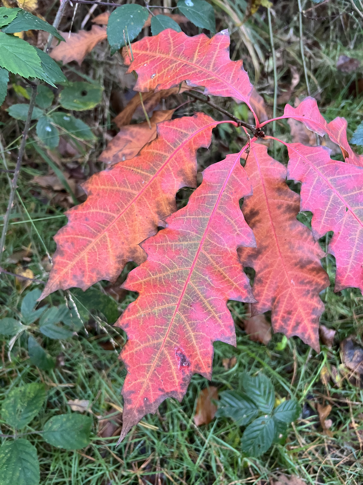

Caroline Coaching
Only when Compassion is present people will allow themselves to see the truth - Almas

Als eigenaresse van drie praktijken in Arnhem hield ik lange tijd mijn hoofd maar net boven water. De uitdagingen in de diergeneeskunde namen toe, personeel was lastig vast te houden, en ik voelde me enorm verantwoordelijk. Uiteindelijk volgde een burn-out, maar dat werd een keerpunt. Door opleidingen en trainingen kwam ik dichter bij mezelf. Dieren zijn altijd authentiek, dat inspireerde me om weer keuzes te maken vanuit wie ik werkelijk ben.
Alleen met het hart kun je goed zien, het wezenlijke is voor de ogen onzichtbaar. - Antoine de Saint-Exupér

Mijn benadering zit op de laag van de essentie, niet enkel op gedragsverandering. Daar, in de onderstroom waar het schuurt en pijn doet, maak je contact met je authentieke zelf. Vanuit daar kun je kiezen wie je echt wilt zijn en wat je werkelijk belangrijk vindt.
Vertel me iets en het waait door me heen. Laat het me zien en ik weet het morgen nog. Laat het me voelen en ik weet het mijn hele leven. - Lao Tse

Neem gerust contact op voor een kennismakingsgesprek. Je kunt mailen of bellen, ik hoor graag van je.
Safety is not the absence of a threat but the présence of connection - Steven W. Porges
 English
English